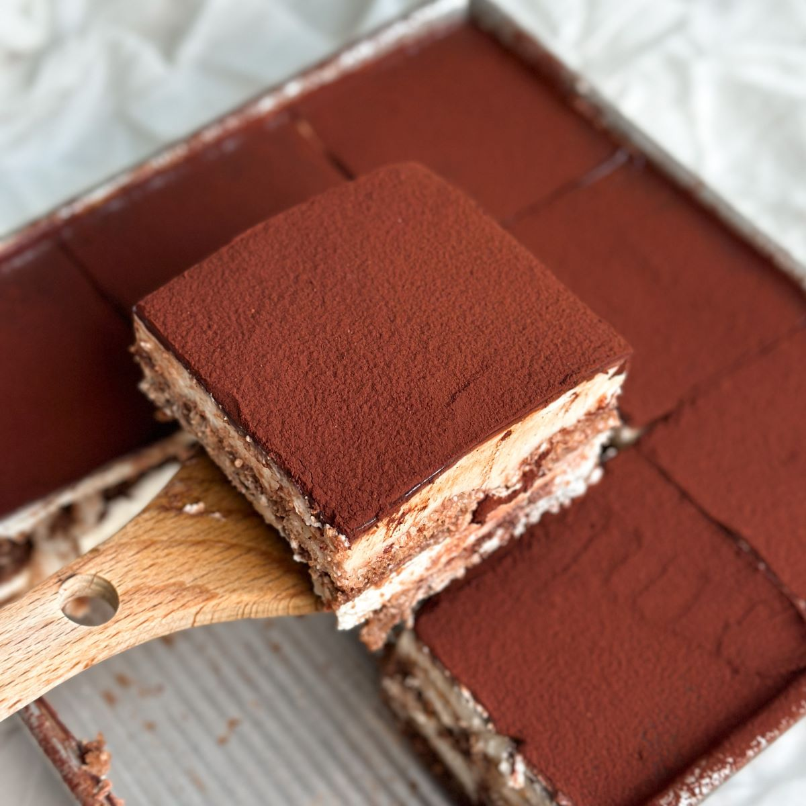

Best Tiramisu Recipe for Beginners
Description
Tiramisu (Italian: tiramisù) is a beloved Italian dessert known for its rich, creamy layers, and delightful balance of flavors. . Originating in Italy, this dessert's name translates to "pick me up" or "cheer me up," which is fitting given its indulgent ingredients. Traditional tiramisu is made with layers of espresso-soaked ladyfingers, a luscious mascarpone cheese mixture, and a dusting of cocoa powder on top. The combination of the strong coffee flavor, the velvety mascarpone, and the light sweetness creates a dessert that's both comforting and sophisticated. Often served chilled, tiramisu is a perfect way to end a meal on a sweet note.

Main Ingredients
- For the cream:
- 4 large egg yolks
- 1/2 cup or 100 grams granulated sugar
- 3/4 cup heavy cream
- 1 cup or 227 grams mascarpone (8 ounces)
- For the assembly:
- 1 3/4 cups good espresso or very strong coffee
- 2 tablespoons rum or cognac
- 2 tablespoons unsweetened cocoa powder
- About 24 ladyfingers (from one 7-ounce/200-gram package)
- 1 to 2 ounces bittersweet chocolate, for shaving (optional)
Preparation
- Use an electric mixer in a large bowl, whip together egg yolks and 1/4 cups (or 50 grams) sugar until very pale yellow and tripled in volume. Set aside.
- In a medium bowl, whip cream and remaining 1/4 cup (or 50 grams) sugar until it creates soft peaks. Add mascarpone and continue to whip until it creates a soft, spreadable mixture with medium peaks. Gently fold the mascarpone mixture into the sweetened egg yolks until combined.
- For the assembly, combine espresso and rum in a shallow bowl and set aside.
- Use a sifter, dust the bottom of a 2-quart baking dish with 1 tablespoon cocoa powder.
- Work one at a time, quickly dip each ladyfinger into the espresso mixture and place them rounded side up at the bottom of the baking dish. Repeat, using half the ladyfingers, until you've got an even layer. Spread half the mascarpone mixture onto the ladyfingers in one even layer. Repeat with remaining espresso-dipped ladyfingers and mascarpone mixture.
- Dust the top layer with remaining tablespoon of cocoa powder. Cover with plastic wrap and let chill in the fridge for at least 4 hours. Top with shaved or finely grated chocolate, if desired.
- Slice or scoop to serve. Voilà!